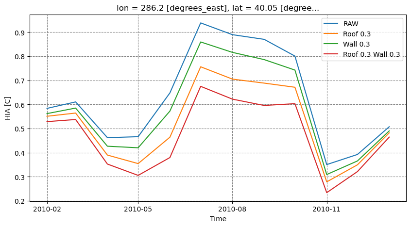

How dose the land surface affect the urban cliamte?
Junjie Yu, 2023-12-06, Manchester, UK
ENV: RL_urban; docker container: myclm; docker image: clm5docker
1 Get the shell script for running CESM/CLM
simulation location : New York City
New York City coordinates can be replaced with other city coordinates
40°42′46″N 74°00′22″W from https://en.wikipedia.org/wiki/New_York_City
New York City = {‘lat’: 40.42, ‘lon’: -74.00}
[1]:
from utils.cesm import *
print(now_time())
CASESCRIPT = "/p/project/clm5.0/cime/scripts"
CASESCRIPT_local = "/home/zhonghua/p/project/clm5.0/cime/scripts"
CASEROOT_local = "/home/zhonghua/p/scratch/CESMDATAROOT/CaseOutputs"
DOUT_S_ROOT = "/home/zhonghua/p/scratch/CESMDATAROOT/Archive"
scriptpath = "./scr/PTS_script.sh"
configpath = "config_newyork.json"
cesm = cesm_run(CASESCRIPT, CASESCRIPT_local, CASEROOT_local, DOUT_S_ROOT, configpath)
with open("/home/zhonghua/p/pyscripts/PTS_script.sh", "w") as f:
f.write(cesm.create_case(scriptpath))
#print(cesm.create_case(scriptpath))
# password = "***"
password = input("Password of server: ")
cesm.reset_case(password=password)
# change the permission of the script
command_0 = "sudo -S docker exec myclm chmod +x /p/pyscripts/PTS_script.sh"
run_command(command_0, password)
# run the script
command = "sudo -S docker exec myclm sh -c '/p/pyscripts/PTS_script.sh' "
run_command(command, password)
d0 = cesm.nc_view()['HIA_U'] - cesm.nc_view()['HIA_R']
Current time: 2023-12-06 10:34:45
[sudo] password for zhonghua: [sudo] password for zhonghua:
Modify the surface data
[ ]:
Here We changed the surface albedo (ABL) of roof and wall, respectively.
We explored the HIA of the gird. HIA indicates the
[2]:
cesm.modify_surf(var="ALB_ROOF_DIR", action=0.3)
run_command(command, password)
d_m_roof = cesm.nc_view()['HIA_U'] - cesm.nc_view()['HIA_R']
cesm.modify_surf(var="ALB_ROOF_DIR", action=-0.3)
cesm.modify_surf(var="ALB_WALL_DIR", action=0.3)
run_command(command, password)
d_m_wall = cesm.nc_view()['HIA_U'] - cesm.nc_view()['HIA_R']
cesm.modify_surf(var="ALB_ROOF_DIR", action=0.3)
run_command(command, password)
d_m_roof_wall = cesm.nc_view()['HIA_U'] - cesm.nc_view()['HIA_R']
# rest the surface albedo
cesm.modify_surf(var="ALB_ROOF_DIR", action=-0.3)
cesm.modify_surf(var="ALB_WALL_DIR", action=-0.3)
[2]:
array([[0.192 , 0.30399999, 0.27200001],
[0.192 , 0.30399999, 0.27200001]])
3 View the results
[3]:
import matplotlib.pyplot as plt
print(now_time())
fig, ax = plt.subplots(1, 1, figsize=(10, 5))
json_file_path = "config_newyork.json"
#cesm.nc_view()['HIA_U'].plot(ax = ax)
#cesm.nc_view()['HIA_R'].plot(ax = ax)
d0.plot(ax=ax, label="RAW")
d_m_roof.plot(ax=ax, label="Roof 0.3")
d_m_wall.plot(ax=ax, label="Wall 0.3")
d_m_roof_wall.plot(ax=ax, label="Roof 0.3 Wall 0.3")
ax.set_xlabel('Time')
ax.set_ylabel('HIA [C]')
ax.legend()
# Add grid lines
ax.grid(color='gray', linestyle='dashed')
# Set grid lines to align with x-axis ticks
ax.set_axisbelow(True)
plt.show()
Current time: 2023-12-06 10:42:15
